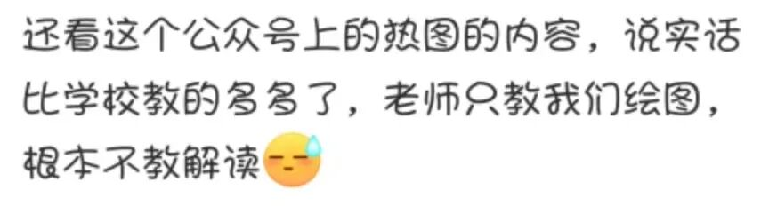
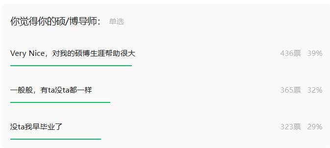
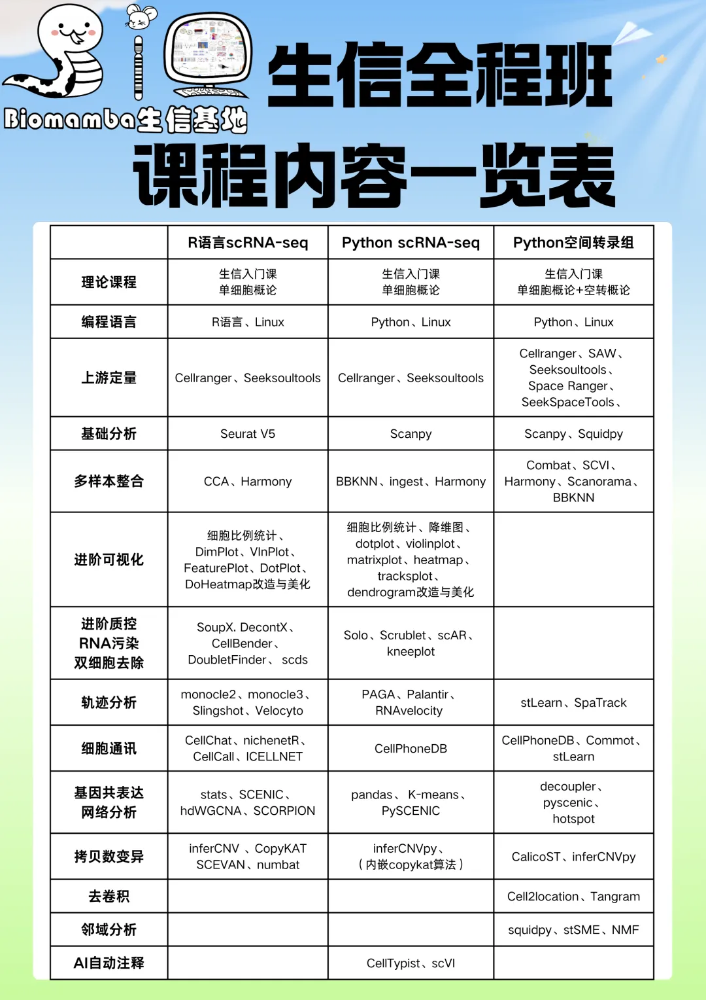
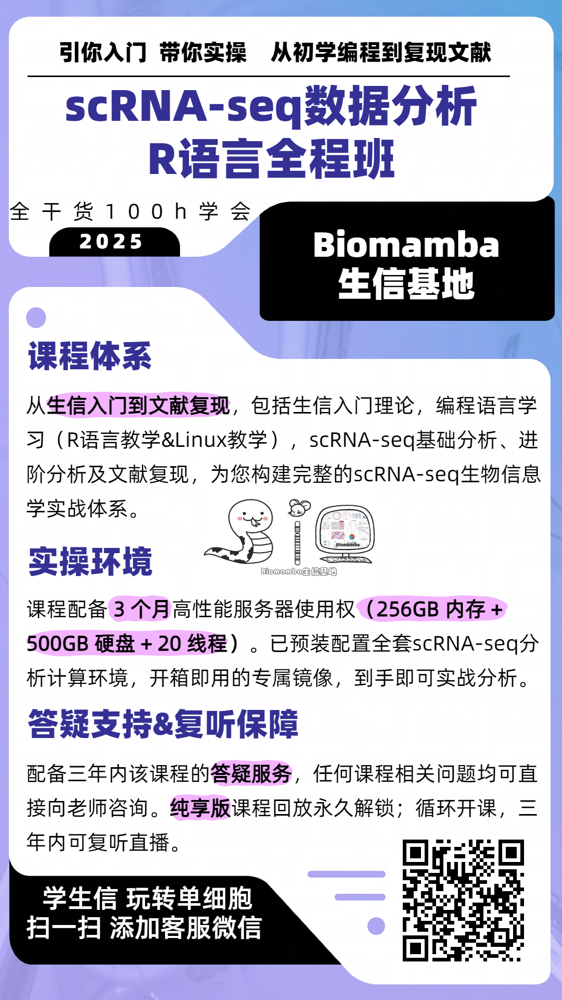

生信教育为何一直在野？
原文：https://mp.weixin.qq.com/s?__biz=MzAwMzIzOTk5OQ==&mid=2247538745&idx=1&sn=3384a8bfa8813e0e5374fb28d01c8c7b&chksm=9b3c2169ac4ba87f900a31301e1dcb5d5cb0ac907e91000009e8f3e542b422dda1a3bcc72537#rd 合集：漫谈胡侃
最近收到观众的评价，表示我们教的比学校教的内容多多了，学校老师只教绘图。仔细交谈了一下，这是位“生物信息学”专业的在读本科生，该院系很多专业课的老师甚至并非生信出身。其实我们也一直很疑惑，生信教育为何一直在野？对于这一现象，我们更觉得悲哀，Biomamba一直认为像本平台这类的自媒体或/民间学术组织并不应该存在。正是由于校园生信教育的缺失、校园生信人才培养与实际科研/社会需求之间严重脱节，才给了我们这类平台发展的机会。

当然，由于大家所处的环境不一样，对这件事的体感可能也不太相同，欢迎在评论区交流、杠一杠。之前我们也做过硕博关于导师满意图度的调研(《Nature》：什么能让博士生快乐——好导师)，好评率大概在39%(大家觉得比预想的高还是低了？)
关于生信教育，我们可以换一个问题：
生信教学，我们一直在耕耘
搞生信教学，我们是专业的，Biomamba生信基地全网分享的生信教程点击量近千万次。B站单细胞视频单个合辑播放量就直逼50w，每每看到有粉丝致谢，还是满满的成就感。生信基地的要务就是为大家提供高质量生信教学，拒绝生信快餐，我们拥有多个学习周期两个月的全程课程，每个课程都创建并维护交流群，课后欢迎大家随时在群里针对课程内容提问！还配套开箱即用的单细胞分析镜像，想学不会都难！

感兴趣的同学欢迎联系客服微信[Biomamba_zhushou]参与学习
现有培训体系详细大家可参考(图片可跳转详细介绍)：

 当然，三个班一起参加也会有优惠：
当然，三个班一起参加也会有优惠：

如何联系我们

 留一个领取资料、开箱即用的单细胞分析镜像的微信号[Biomamba_zhushou]，方便各位随时交流。同时我们也构建了交流群矩阵，欢迎大家入群讨论。
大家可以阅读完这几篇之后添加给生信入门初学者的小贴士
没有检索，就没有发言权
留一个领取资料、开箱即用的单细胞分析镜像的微信号[Biomamba_zhushou]，方便各位随时交流。同时我们也构建了交流群矩阵，欢迎大家入群讨论。
大家可以阅读完这几篇之后添加给生信入门初学者的小贴士
没有检索，就没有发言权
已有生信基地联系方式的同学无需重复添加

 您点的每个赞和在看，我都认真当成了喜欢
您点的每个赞和在看，我都认真当成了喜欢